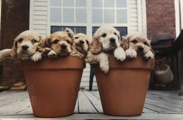
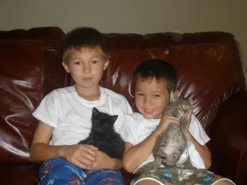
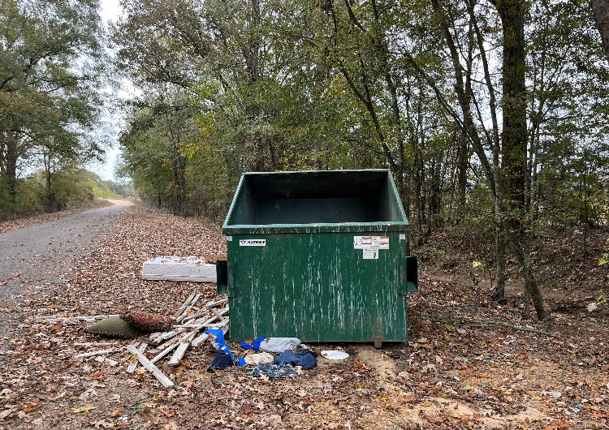
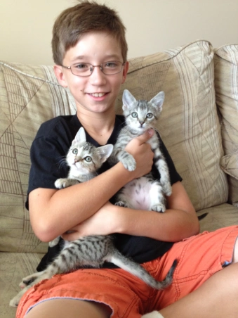
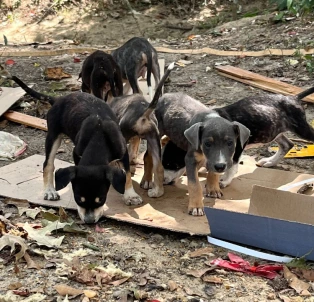
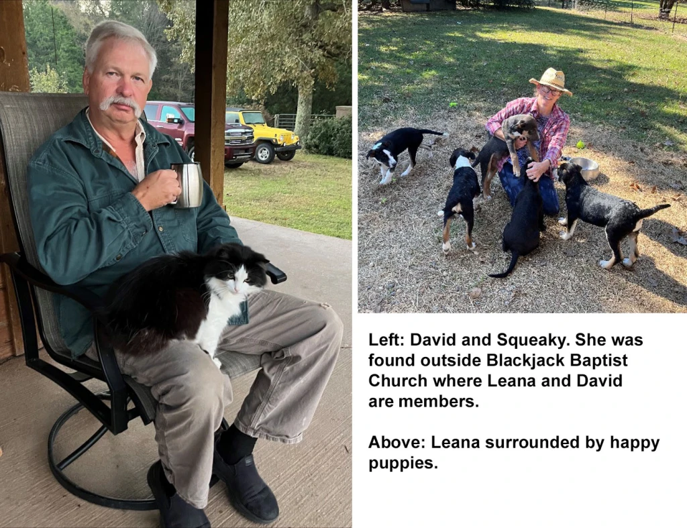
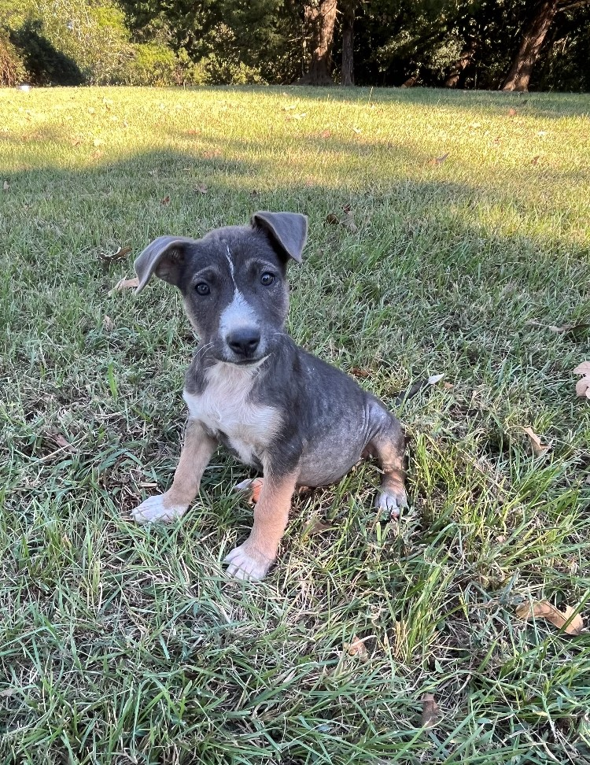

Rescue
 Six-week old Sasha (far right) with her littermates a few days before Kaylon adopted her.
Years ago when I was still in college, my roommate adopted a puppy she named Sandy. She was a blondish cocker spaniel with the sweetest disposition, and I completely fell in love with her. I decided that I too wanted a cocker spaniel just like Sandy. I started watching the ads in the paper, and before long I found a breeder with a litter of cocker spaniel puppies. I went for a visit and met the breeder and the canine family. The puppies came with papers that listed the names of their purebred mother and father and guaranteed their unblemished cocker spaniel pedigree. Not just anyone could adopt one of these puppies. I was required to pass a background check and, once approved, had to hand over a chunk of cash before I could take my puppy home. I was approved, paid the breeder, and named my puppy Sasha.
Sasha and I quickly bonded, and she and I were nearly inseparable for more than a decade. She was with me through my best and worst days, and, after developing a blood disease, she died in my arms shortly after she turned 13. That was nearly 15 years ago, and the pain of her loss has barely diminished over time. I have no regrets over having Sasha in my life and cannot imagine the day will come when I won’t miss her. However, she is also the reason I will never again buy an animal from a breeder.
You see, an unexpected thing happened when I got Sasha. Suddenly, I was far more aware of other dogs. Whenever we went for a walk or to the park, if I saw a dog off a leash, I found myself worrying about them. Do they have an owner? Have they been abandoned? Do they need help? I wasn’t just Sasha’s mom—I wanted to take care of all the dogs. Even more important, Sasha’s papers became completely irrelevant. She was my baby no matter her pedigree.
By the time Sasha died, I was married with two young sons. When we were ready to open our home to another pet, they both wanted a kitten. Instead of a breeder, we went to a shelter called “Love at First Sight.” A decade before that same shelter had taken a litter of puppies I ended up with after a friend and I rescued a pregnant, abandoned dalmatian. I was so grateful that I promised I would adopt from them if I ever decided to have another pet. The day I returned to fulfill my promise, they only had two kittens. They were siblings and the last of their litter left at the shelter. How could we leave one behind? I easily convinced myself that since I had two boys, we should get two kittens.
 Kendrick and Blackie (left) with Keaton and Stormy (right) shortly after we brought the kittens home in 2009.
Shortly after we brought Blackie and Stormy home, my youngest son made a new friend at school. Alex lived in our neighborhood, and Keaton wanted to try and find his house. We did and Alex’s mother and I soon became good friends. The first time Alex and Christina visited our house, they couldn’t get enough of the kittens. Christina had recently lost her cat, and she was thinking it might be time to adopt another. I mentioned that my sister lived on a farm in rural Mississippi and that she frequently found abandoned animals at the “pitch-in.” The pitch-in is a dumpster down the road from their farm, and, sadly, some people dump more than their trash.
 The pitch-in dumpster near Leana and David’s farm in Vaughan, Mississippi.
Christina asked me to let her know the next time Leana found a kitten. “We might be interested,” she told me. If Christina thought it would be a while before Leana found another stray, she was mistaken. Right about the time I was telling Christina about my sister and the pitch-in, Leana found two tiny, flea-covered kittens huddled next to the dumpster. Less than a month later, my mother happily drove to Nashville to see her grandsons. She brought with her the now flea-free kittens and handed them to Alex. He named them Zeus and Athena.
 Alex with Zeus and Athena on adoption day.
In the years since she found Zeus and Athena, Leana has rescued more cats and dogs than I can count and at least one duck. Sometimes she can find them homes, but, if not, she and her husband, David, add them to their menagerie. At the moment their farm is overflowing. In addition to their own animals, which includes four dogs, two cats, and five horses, they have recently taken in a litter of six puppies that they found at the pitch-in.

The puppies at the pitch-in immediately before
Leana and David brought them to their farm.
Not only did they have fleas, but they also all had varying degrees of mange. She took the whole group to the vet and immediately began treatment to get them healthy. One puppy, a little girl named Dolly, has found her forever home, but, at least for now, the rest remain with Leana and David. Unfortunately, the puppy count soon returned to six. Almost as soon as Dolly was settled in with her new family, another puppy was found wandering near the road by their farm. Leana didn’t hesitate. Lucky for the pups, their farm is nearly as big as Leana’s heart for animals.

Not everyone is in a position to rescue lost and abandoned animals, and I am thankful for those who do. I’m also grateful for the many veterinarians who offer their services at a discount to those who rescue animals or who offer at-cost spay and neuter services. I wish I was able to do more to help the cause, but I am not a veterinarian and I do not live on a farm. I can assure you, though, that every animal I adopt from now until the end of my days will be a rescue. He or she will come from a shelter or perhaps from the pitch-in in Vaughan, Mississippi.
 Dolly at the farm shortly before being adopted. Although she is no longer available, four others are. If you are looking to add a new member to your family, please email me at kaylon@kaylonbrunertran.com and I will put you in touch with Leana and David.
Quick Links
| Pages | Other Pages | |
|---|---|---|
| Home | The Agent Orange Trilogy | |
| The RAM Blogs | Edge of Justice | |
| Books | Help | |
| Media | ||
| About Me | ||